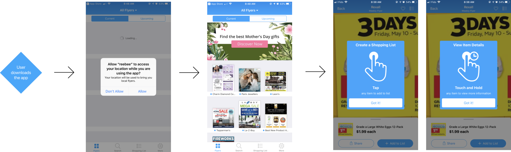
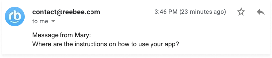
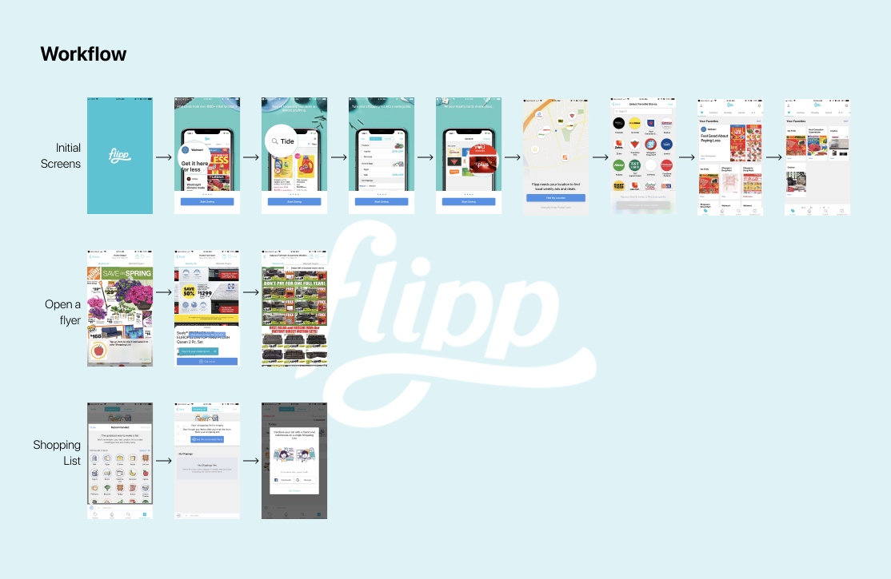
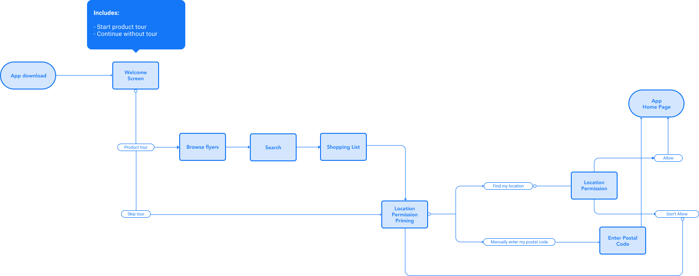
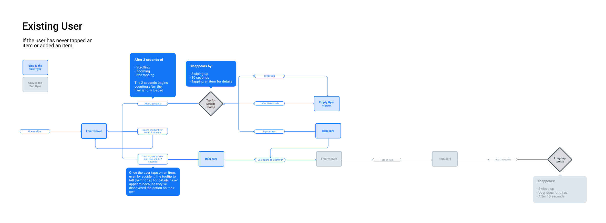
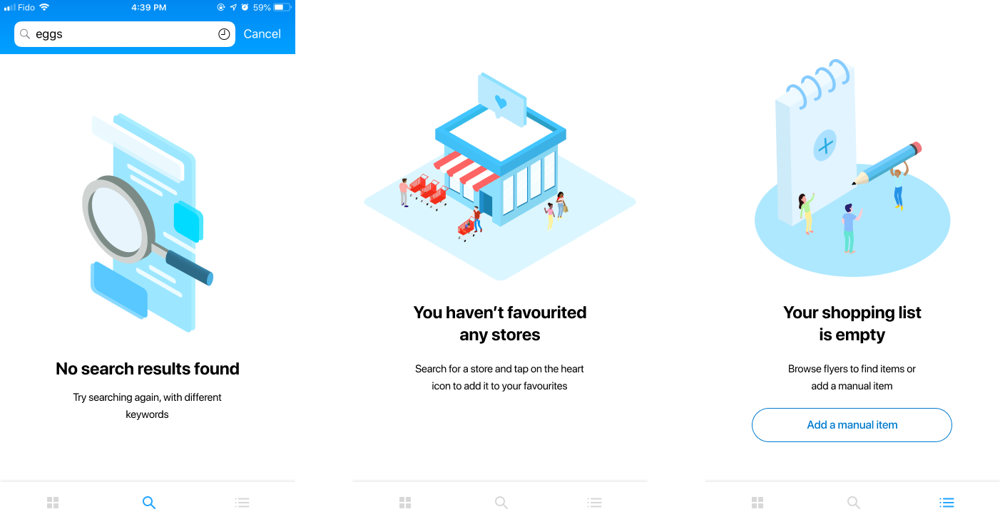
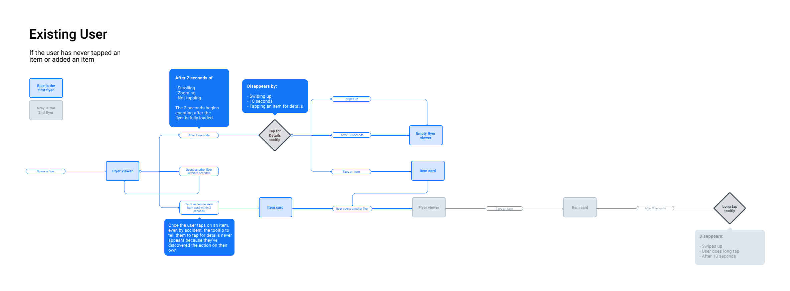
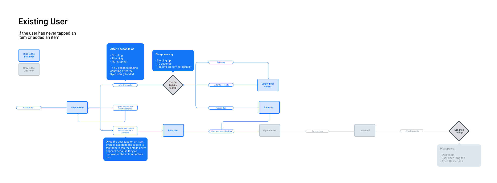

With rapid growth in sight, reebee hopes to build out their design team and plans for several new features within the year. To achieve consistency across the platform, I began to advocate for the importance of a design system for our products to stakeholders.
With a solid design system, designers and developers can reference it to guide all aspects of the user experience from the conceptual building blocks of the product, to the details of the UI and which components are used where.
ROLE AND DURATION
Product Design Intern | reebee
Research, Information Architecture, Interaction Design, Visual Design
As projects grow over time, and people come and go, it becomes increasingly difficult to align on a vision for design. The business values may change, the industry shifts, and collaboration becomes more complicated.
Currently, reebee has no design system. The components and stylings across our platforms are inconsistent (buttons, text fields, workflows, titles, fonts) and developers and designers work in silos. There are no ideologies set in place to guide design decisions for incoming and existing product team members, leaving out possibility of structure and meaning in our designs. Without any sort of guidelines or principles, it's no surprise that it will show through our interface and involve more cleanup later on.
3
platforms of reebee are available on iOS, Android and the web
Solution
A Design System
As projects grow over time, and people come and go, it becomes increasingly difficult to align on a vision for design. The business values may change, the industry shifts, and collaboration becomes more complicated.
Challenges
Throughout my co-op term with reebee, I had to stay persistent in advocating for the design of the application and to keep me in the loop for product changes. As the only designer, I found receiving feedback directly on my design was difficult to find and often consulted with developers and the co-founders on my decisions for validation. Going into this project, I knew my designs had to be accompanied by lots of support and explanation to make sure everyone understood the reasoning behind specific stylistic choices or UX flows.
Onboarding involved getting to know the app better and understanding what users were getting confused on/were annoyed at learning. This was my first project coming into reebee and learning it as quickly as possible delayed my progress at the beginning of the project.
Some context
Here is the current reebee onboarding flow

Absence of location priming
One of the best practices in user experience is keeping your process as transparent as possible where you can. Upon entry, users are asked immediately for their location, which is needed to locate flyers that apply to their area so to maximize the experience.
Lack of brand personality
These days, long-term business growth means adding personality to your brand - avoid being a cold piece of software our users don't feel welcomed in.
Intrusive consecutive tooltips that go unread
90% of users tend to skip the product tours of an application, finding them disruptive to the workflow and discovery of the new app. Although, we did find them important in making sure that users understood how to get from point A to point B.
What should we learn?
I started by framing the problem through questions
Why do customers need our product?
What value does reebee bring to customers?
How does reebees value proposition compare to similar applications?
Where are users getting stuck/experiencing a barrier?
What are some of the different directions I can take to onboard?

How do we learn it?
METHODS
Customer feedback through app store reviews and reebee inbox
Interviews with stakeholders
Data metrics
User interviews
PARTICIPANTS
Regular reebee users
New reebee users
Stakeholders
Customer service team
Insights
Synthesizing the data to find the most used features, where users were getting confused, what the stakeholders wanted to achieve, and finding reebees value proposition through stakeholder interviews, contextual inquiry, and analyzing the gathered data against metrics from our Firebase console and Fabric analytics.
Why do customers need our product?
Save money
Finding their items online
Keeping track of their shopping list
What value does reebee bring to customers?
Browsing flyers digitally and easily
Searching for items and seeing deals
Saving and adding items to a shopping list
What are some of the different directions I can take to onboard?
Interactive tour through the product's core feature
Tooltips to guide the user through features of the app
Full screen walkthrough at the beginning of the application as a series of instruction elements
Introducing features as the user finds new screens in the app (ongoing)
Where are users getting stuck/experiencing a barrier?
Main screen - user becomes overwhelmed with the degree of flyer content which may/may not pertain to their shopping needs. They aren't sure where to get to next
No sense of personalization may be deterring
Lack of colours, graphics, engaging content
Goal
Emphasize a first time user's understanding of the application's core features through an informative onboarding process to assume greater retention of users.
Solution
As the sole designer on this product, I researched various onboarding methodologies and best practices to seek direction at the early stages. Much of what I read was centered around bridging the gap between acquiring new users and turning them into highly engaged customers. It's up to you, as the owner of this project, to show the product's best self in 5 steps or less to showcase its core features and introduce value to the product. Ideally, the user sees the product as a solution, and engages directly with the brand. In the end, we approached the problem as a 3-part solution combined into one coherent, seamless onboarding process.
1. Full screen walkthrough
Q: What are the core features of the application? What do they need to know immediately to assess the benefits of using reebee?
CORE FEATURES
To identify the core features of the application, I used a user survey and asked users what features they used most often. Here are the results
Browsing flyers
According to our Firebase data analytics console, 64.7% of daily users use the flyer through opening it from the bookshelf, viewing from a searched item, etc.
Shopping List
In the past month, 2.1 million items were added to a users shopping list.
Item Search
83% of interviewed users said one of the primary actions they use reebee for is searching for specific items they need.
2. Tooltips in the app
Q: Where are users getting stuck/experiencing a barrier? What are some complex actions in the app?
IMPORTANT PARTS IN THE APP
Viewing the details of an item
Sharing/exporting a shopping list
3. Empty state screens
Q: How can we show our brand personality to new users? How do empty states work to guide users to their next action?
EMPTY STATES
Shopping list
Favourites list
Search results
Category
Upcoming flyers
Market research
Our main competitors in this space are Flipp and Checkout 51, both of which have established onboarding processes within their applications. To convince my stakeholders to implement one into our app, I analyzed their methods and picked apart the pros/cons of each one and translated the best parts into my final designs. For example, although many studies and testing sessions have shown users tend to skip through in-app walkthroughs, both our competitors use it to their advantage and as a way to reiterate the brand image to users on their first-time user.

Wireframing
In order to make the best decision when it came to the final design, I gave my stakeholders and developers a few samples of possible avenues we could explore in the onboarding process. Firstly, to show them how I approached the design process and secondly, to show them all the options there are when it comes to onboarding to prep them for more onboarding design talks later on.
In the feedback sessions with my stakeholders, I wanted to make sure I would be prepared for the alternative suggestions they made to my design to make sure we weren't wasting time in meetings just talking about other options. So I decided to design these various mockups to demonstrate that I explored different options, and that my recommendation wasn't made without other design solutions in mind. As well, when they suggested other options, having something to show my stakeholders right away to say "Yes, I already tried that" and to have something to show for it speeded up the decision making process much quicker.
Onboarding in the app
For the first design of the full screen walkthrough, I created workflow diagrams to determine where the different screens would appear in the application and sent it to the developers.
FULL SCREEN WALKTHROUGH
The full screen walkthrough consists of 5 screens in total. three of these screens are meant to cover the key actions/features of reebee, one for location priming (currently the permission request pops up with no context), and one initial welcome screen. The moment the user signs up for your product/downloads the app, their interest in using it is at an all-time high. To optimize for this, I focused on keeping the complex points (forms, permissions) to post-clicks of the main onboarding process. The whole process can be skipped at any time - but location priming must be read and accepted either through allowing their location or manually entering their postal code before they can continue into the app to make sure it reaches its full functionality.

TOOLTIPS
Tooltips were trickier to integrate into the application. Whereas we knew exactly where the full screen walkthrough would go, we had to have several meetings to discuss optimizing the tooltips' appearing at times the user would need to see them. This means taking into consideration 90% of users usually skip popups, the fact that we wanted them to give them some sense of independence in the app and let them discover it on their own, but also showing them the best way to use reebee.
For example, a main feature of our application is the ability to add items from a flyer directly into a shopping list but after looking at the data, we realized only about 25% of users actually use this feature. Of course, this could be due to personal preference but to target users who simply didn't understand/know about the functionality: How do we place the tooltips in a way that will lightly push this behaviour so users can get the most out of their experience?
Additionally, the onboarding process was initially thought to displayed only for first-time users. However, with realizing that only 25% of users were adding flyer items, we contemplated on adding the tooltips in now for existing users who were part of those 75%. Here is the result of those two workflows that I sent over to my customer success manager and the developers on the team to sort out the logic of the process.

Initial sketches
After meeting with my team about the different designs I wireframed, we chose to start with the full screen designs as an MVP to implement it into the app as soon as possible. Once we decided on the core features of the app, I started on the sketches using Procreate on my iPad. A big part of the project was also identifying reebee's voice and branding to customers and the sort of personality we wanted our brand associated with. Working with the graphic designers, we identified design principles of reebee's brand.
Trust with our users
Hundreds of thousands of Canadian households rely on reebee to save on their household items. reebee helps these household save thousands of dollars per year and live more organized, productive lifestyles that require an established foundation of trust with our customers.
Conversational
As our company grows in downloads and size, keeping that personable relationship with our user base becomes more difficult to maintain. We want to ensure that our app feels relaxed and conversational, giving users the impression of a company that values their interests and input.
Intuitive and consistent
Our user base consists of individuals aged 15-80 - maybe of which occupy the 35+ demographic that have reported frequently their technological limits prevent them from using reebee to its full potential. Keeping this in mind, the solutions we create must be adjustable to their skill level is essential to creating a more inclusive experience.
Copywriting process
Copywriting was a very collaborative, important part of the onboarding design process. It needed as much deliberation as the design decisions for the UI. These screens show how I approached thinking through the copy so its clear, concise, helpful, and contextual.
I created an excel doc and compiled three different versions of the copy - one written by our marketing team, one by our stakeholders, and one by myself and the dev team lead and put them side by side for comparison.
Engaging users with imagery
The use of imagery was a strong component in creating the onboarding screens. According to the biophilia effect, associating text with connections to nature can be very relaxing and engaging to people as they are more trusting and drawn to proper uses of coloring and visuals.
Since the goal of the onboarding process is to encourage users to read about our features before entering the application, we wanted to keep users on the onboarding screens interpreting and reading the information as much as possible. I spent some time on Adobe Illustrator creating the illustrations around reebee's branding personality and key reebee blue to breathe more life into the app experience.
Final walkthrough design
As part of another reebee design project I was working on, I knew the design of the application might be changing drastically so incorporating screenshots/mockups of the current app design in the screens which is a common design practice wouldn't work in the long-run.
By using imagery that aligns with our consistent reebee branding, I emphasized the scalability of the design to my stakeholders.
Available now on reebee on iOS and Android.
Final empty state design

Final tooltip design
Current progress
The first part of this project, the full screen walkthrough, is implemented on iOS and Android in August 2019 and is currently live on the reebee application, available in the App Store and Google Play. The tooltips and empty state screens and is expected to be complete by the end of September 2019. A few final things we are ironing out are ensuring it follows iOS and Android interface guidelines for their respective platforms, which has been an ongoing challenge for me during this work term.
KEY PERFORMANCE INDICATORS
App Store and Google Play reviews
The app currently has over 30,000 Google Play reviews, which has commonly sped up whenever we introduce a new feature.
Duration spent on each onboarding screen
By measuring the time spent on each of the 5 screens introduced in the full walkthrough, we can assess whether users are reading the copy or skipping through it immediately, and then seeing if the user who spend more time on the screens tend to return after 30 days.
Allow vs Don't allow location access probability
With location priming introduced in the onboarding process, our stakeholders wanted to see if this affected the number of people who were willing to allow for their location to be accessed by their devices.
Retention of users after 30 days
Our original benchmark, taken from the Firebase console's data, is about 12% for Android users.
Future additions
In the future, we plan to do more user testing to identify more pain points the user is experiencing and implementing suggestive tooltips that can help them get the most out of reebee faster. We'd also like to create a design system standard for notifications and tooltips within the app for onboarding and to introduce new features to our existing users.


 
